Computer vision for sports lacks datasets and models that target pole sports, an activity marked by self-occlusion, body inversions, and sustained contact with the pole. Pole-Arina addresses this gap with a curated, privacy-preserving dataset for markerless analysis of static pole tricks.
The collection comprises 836 videos from 58 participants and provides two appearance-suppressing modalities derived from the recordings: pose skeleton sequences and dense optical flow. Each clip is annotated with both per-video trick labels and per-frame labels that capture temporal structure, enabling evaluation of clip-level and frame-wise recognition under privacy constraints.
On top of the dataset, the paper benchmarks lightweight temporal models across all benchmark settings and extends the pipeline toward interpretable, coaching-oriented feedback with a geometric scoring module and a user study.
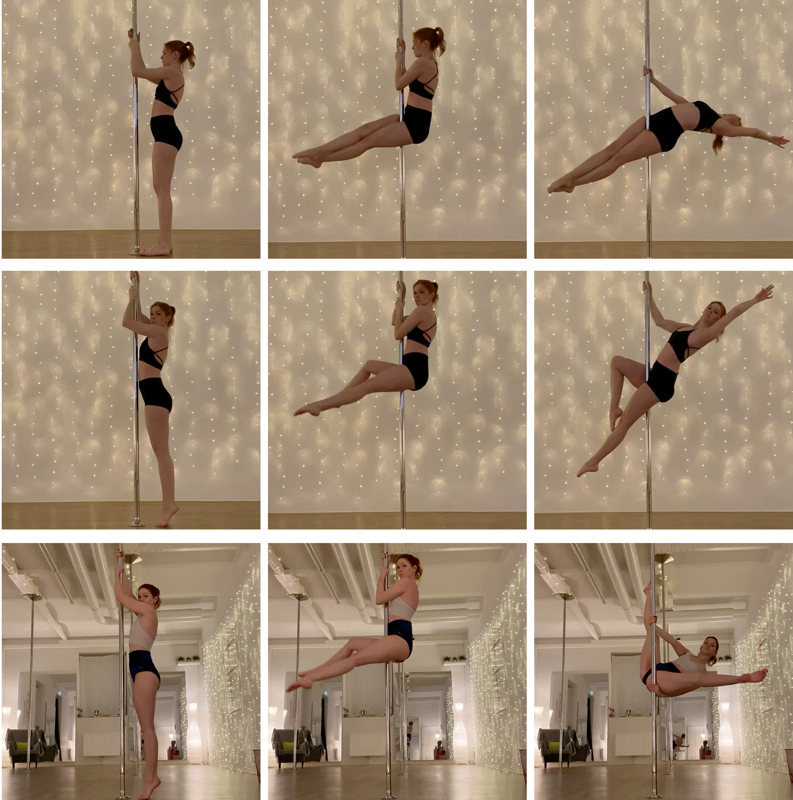
Upright tricks: Layout, Pin-Up, and Wrist Seat.
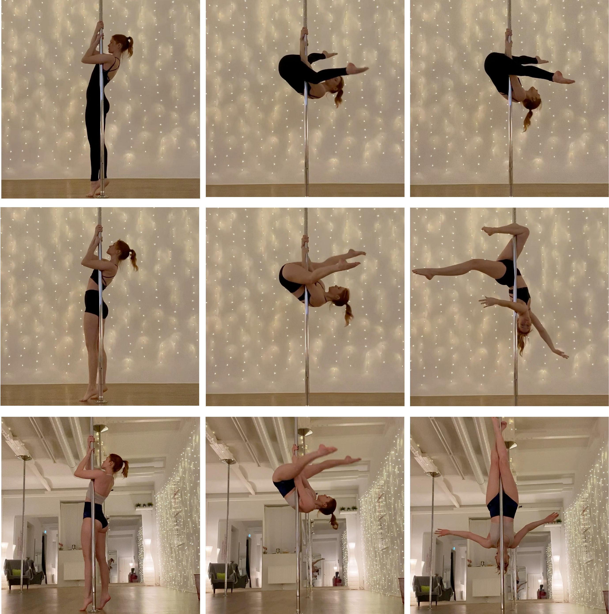
Inverted tricks: Straddle Invert, Gemini, and Crucifix.
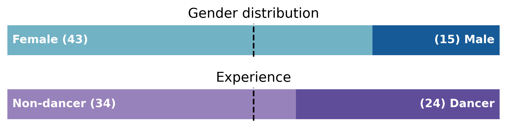
The dataset includes participants with varied gender and dance experience.
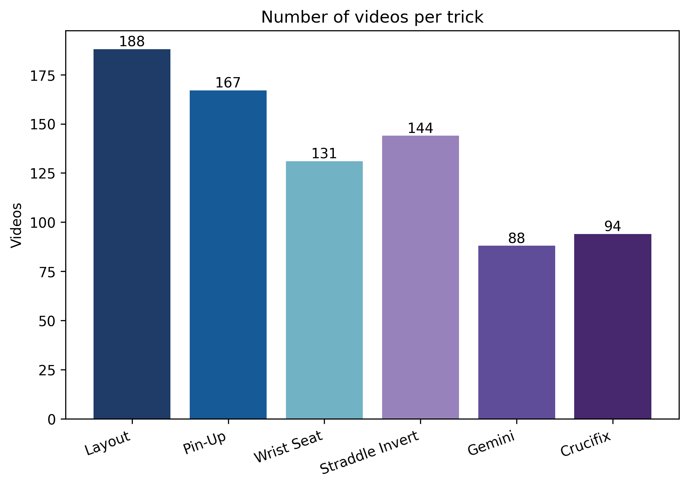
836 clips across six foundational static pole tricks.
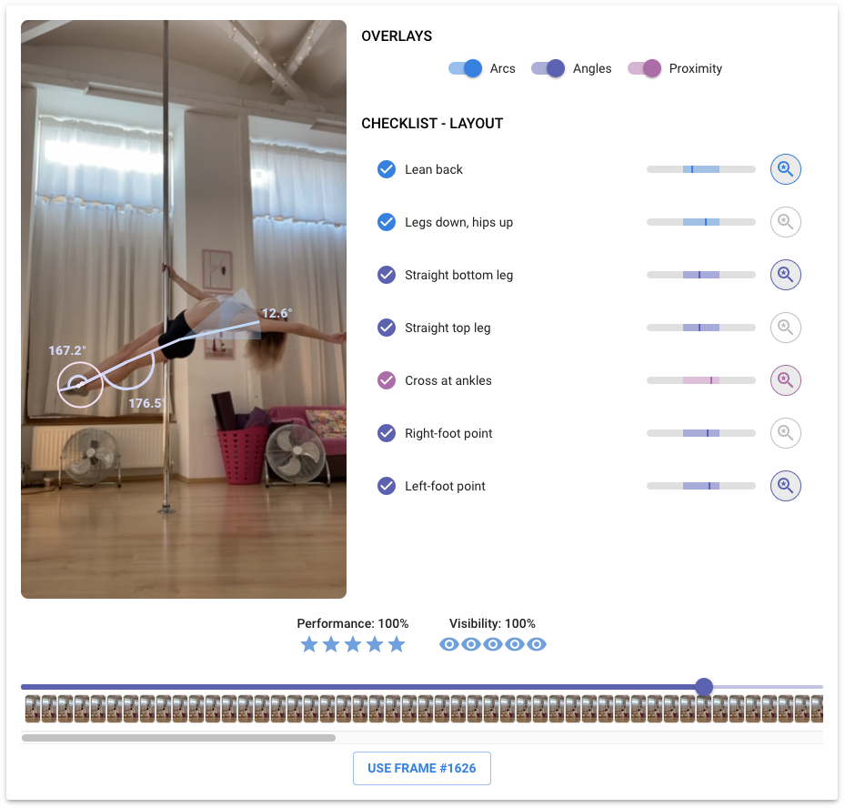
The benchmark also supports a coaching-oriented downstream application.
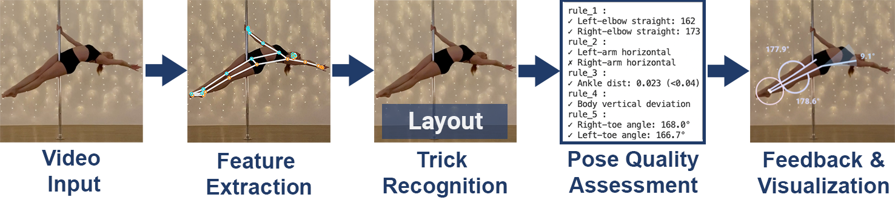
From video input to feature extraction, trick recognition, and interpretable pose-quality feedback.
Pole-Arina converts recorded training clips into stable, privacy-preserving representations for learning and evaluation. Instead of releasing raw RGB video, the benchmark provides body skeletons and dense optical flow.
The baseline models use lightweight GRU-based temporal architectures for both per-video recognition and per-frame classification. A geometric scoring module then turns end-pose structure into interpretable feedback rules that align with coaching practice.
836
clips
58 participants and 212,574 labeled frames.
2
modalities
Skeleton sequences and dense optical flow.
4
benchmark settings
Skeleton/flow crossed with video/frame supervision.
The benchmark exposes a clear gap between the two privacy-preserving modalities. Skeletons provide a strong inductive bias for pose-centric recognition, while optical flow remains a more challenging appearance-suppressed setting with headroom for stronger temporal modeling.
91.26%
Skeleton per-video accuracy
66.67%
Flow per-video accuracy
86.99%
Skeleton per-frame accuracy
77.71 macro F1
81.23%
Flow per-frame accuracy
45.84 macro F1
| Modality | Task | Acc. | Macro F1 |
|---|---|---|---|
| Skeleton | Per-video | 91.26 | 91.50 |
| Optical Flow | Per-video | 66.67 | 67.11 |
| Skeleton | Per-frame | 86.99 | 77.71 |
| Optical Flow | Per-frame | 81.23 | 45.84 |
The prototype combines trick recognition, overlay controls, and per-rule feedback.
Beyond recognition, Pole-Arina studies a practical downstream workflow for static pole coaching. The system predicts the performed trick, extracts an end-pose frame, and scores technique using interpretable geometric rules.
In the reported user study, the experimental Pole-Arina feedback condition achieved a higher SUS score than smartphone self-review: 95.44 +/- 4.07 vs. 86.41 +/- 11.14, with p = .020.
33
user-study participants
17 experimental and 16 control participants.
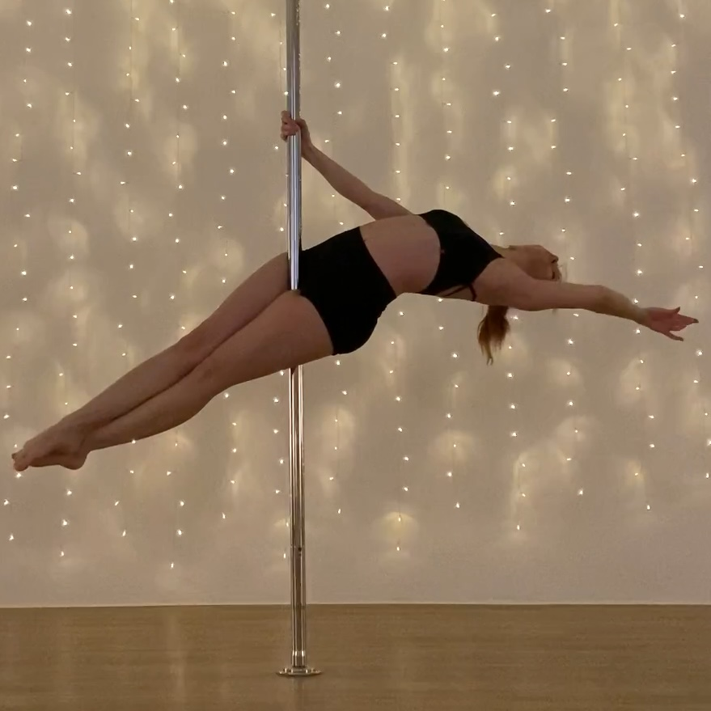
Layout
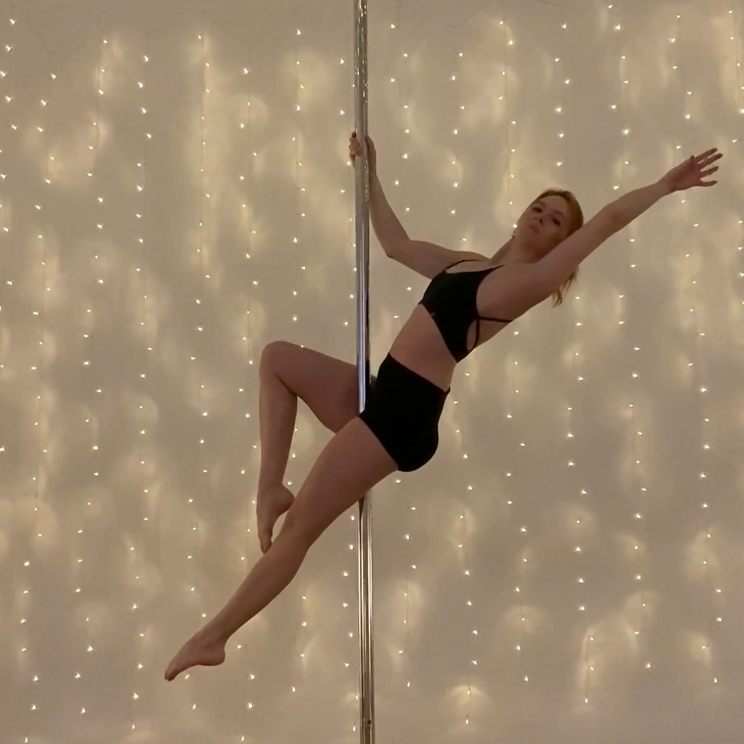
Pin-Up
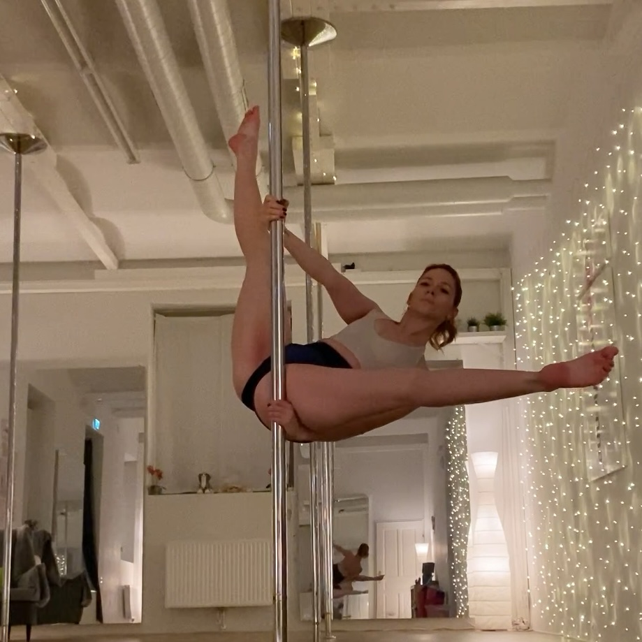
Wrist Seat
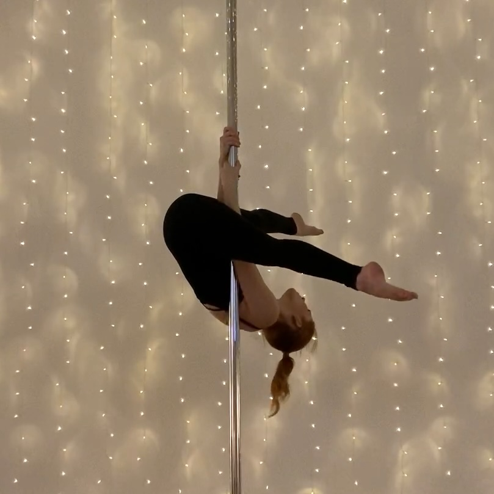
Straddle Invert
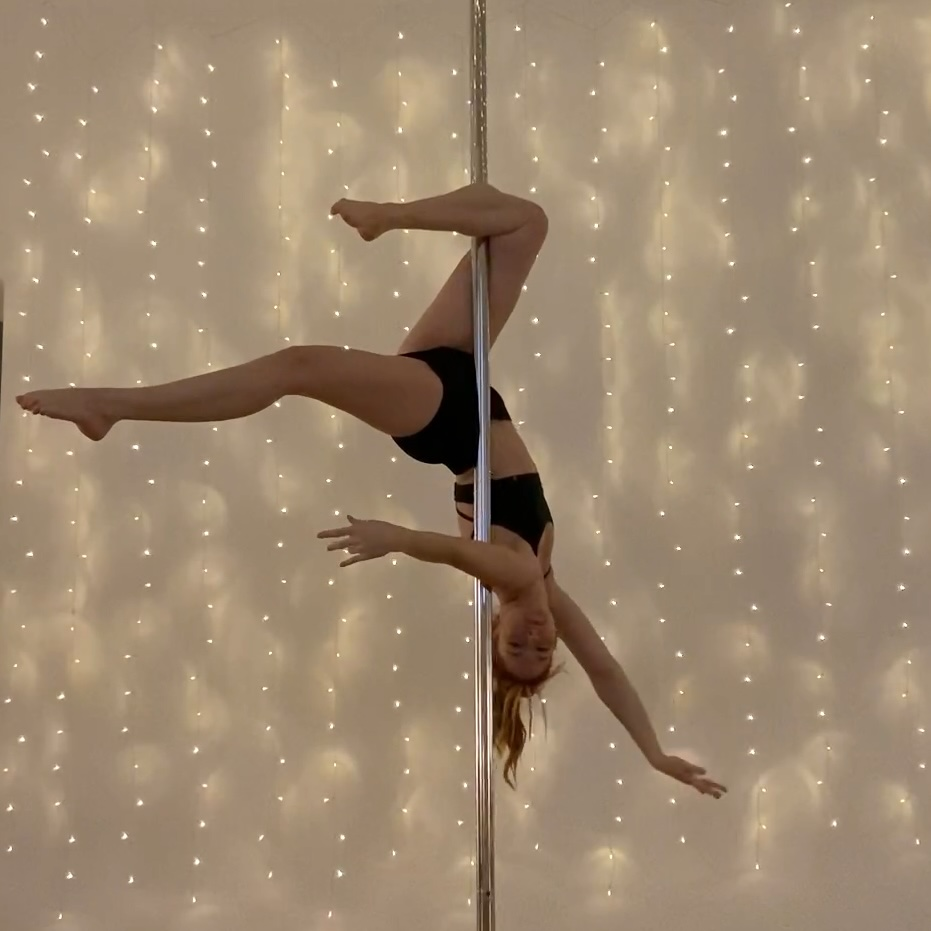
Gemini
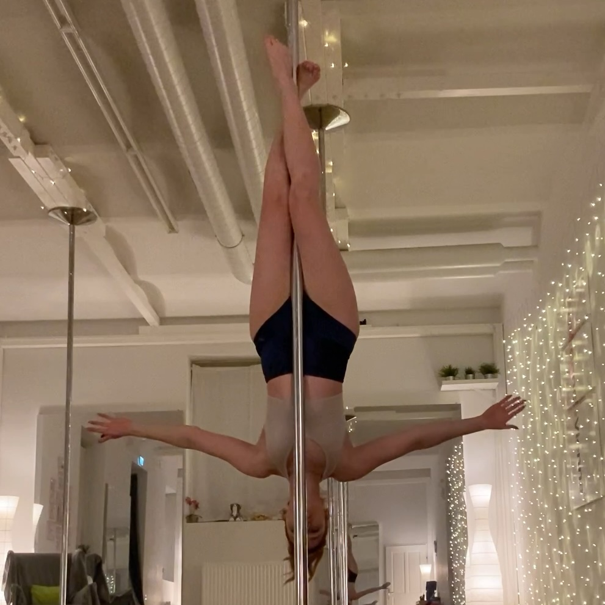
Crucifix
@inproceedings{polearina2026,
title = {Pole-Arina: A Privacy-Preserving Dataset and Benchmark for Static Pole Tricks},
author = {Replace with final author list},
booktitle = {CVPR Workshops},
year = {2026}
}